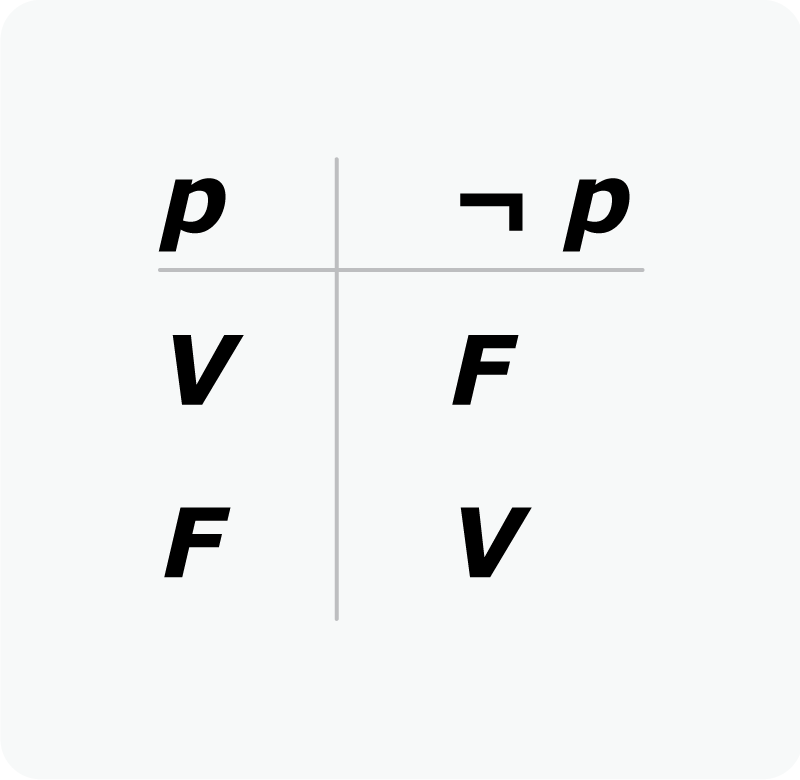

Cálculo proposicional
Descripción
Una proposición es cualquier frase que tenga un valor de verdad definodo, ya
sea verdadero o falso. Por ejemplo:
Está lloviendo. A esta proposición podemos llamarle "p", y podrá ser
verdadera o falsa.
Tabla de la verdad
Son tablas que representan las posibles salidas que puede tener un cálculo
proposicional en función de unos valores de entrada. En la siguiente imagen
podemos ver una tabla de la verdad que nos muestra los posibles resultados
de p^q

Tautología, contradicción y contingencia
La tautología tiene lugar cuando todos los resultados de la
tabla de la verdad son verdaderos.
La contradicción tiene lugar cuando todos los resultados de
la tabla de la verdad son falsos.
La contingencia tiene lugar cuando en los resultados de
tabla de la verdad encontramos valores verdaderos y falsos.
Ejemplo de contingencia:
